rendements = pd.DataFrame({'variete': ['Sahel-108', 'IR-841', 'Nerica-4', 'Locale'],
'rendement': [6.1, 5.4, 4.2, 2.9]})
Chart(rendements).bar('variete', 'rendement').show()
Polices, fond, couleurs, titres, annotations : d’un graphique à une infographie, en quelques appels.
Une infographie, c’est un graphique plus une mise en forme éditoriale : une police choisie, un titre qui dit ce qu’il faut retenir, un fond, des couleurs qui portent le message, des annotations et la source. Chaque élément est une méthode chaînable.
| Élément | Méthode |
|---|---|
| Police | .font('Roboto') : toute police Google Fonts, téléchargée une fois puis mise en cache ; s’applique à tous les textes du graphique |
| Police d’un seul texte | fontproperties=load_font('Inter', 'bold') dans title, subtitle, caption… |
| Titre | .title(texte, fontsize=…, fontweight=…, loc='left') |
| Sous-titre | .subtitle(texte, color=…) : sous le titre, aligné comme lui |
| Source, crédits | .caption(texte, loc='right') : sous le graphique et sa légende |
| Fond | .background('#f6eee3') : figure et zone de tracé, conservé par save() |
| Couleurs | .set_colors([...]) (séries), color=[...] (une couleur par barre), colors={groupe: couleur} selon le graphique |
| Dégradé selon la valeur | cmap=[couleur basse, …, couleur haute] (stem, choropleth, heatmap…) |
| Annotation fléchée | .annotation(texte, xy=point, xytext=texte) : flèche courbe (drawarrow) |
| Légende | .set_legend(location='below'), ou direct_labels=True (waffle, line) ; line(direct_labels='end') : dernière valeur au bout de chaque courbe |
| Graduations | .tick_format(y='{:.0f} %'), x='{:,.0f} $' ou une fonction (virgule décimale : lambda v: f'{v:.1f} %'.replace('.', ',')) |
| Thème d’un seul graphique | Chart(df, theme='sunset') |
| Carte d’un GeoDataFrame | map_points(group=…, labels=…, boundary=regions, basemap=False) |
| Thème complet | set_theme('…') ou with theme_context('…'): (Thèmes) |
Le même graphique en barres, avant et après la mise en forme :
rendements = pd.DataFrame({'variete': ['Sahel-108', 'IR-841', 'Nerica-4', 'Locale'],
'rendement': [6.1, 5.4, 4.2, 2.9]})
Chart(rendements).bar('variete', 'rendement').show()
(Chart(rendements, figsize=(8, 5))
.font('Outfit') # 1. police (Google Fonts)
.background('#f6eee3') # 2. fond
.bar('variete', 'rendement', # 3. couleurs : la locale à part
color=['#2a6f4e', '#2a6f4e', '#2a6f4e', '#c9b79c'])
.title('Les variétés améliorées doublent le rendement', # 4. un titre qui conclut
fontsize=18, fontweight='bold')
.subtitle('Rendement moyen du riz paddy (t/ha), essai 2024', # 5. le détail
color='#7a6a55')
.labels('', '')
.annotation('+110 % par rapport\nà la variété locale', # 6. le message, fléché
xy=(0.2, 6.1), xytext=(1.6, 6.4), radius=-0.3)
.caption('Données fictives · Graphique : plutovizu') # 7. la source
.tight_layout()
.show())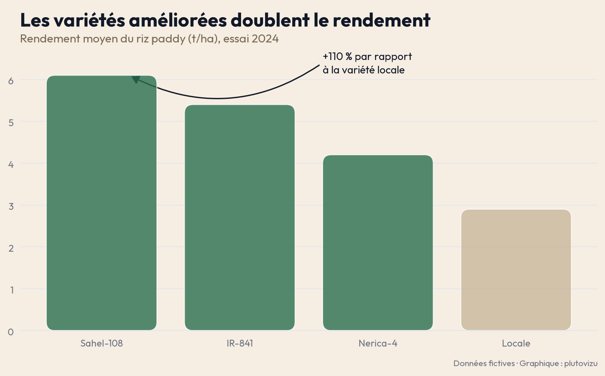
Où mettre quoi. Le titre dit ce qu’il faut retenir, le sous-titre ce qui est mesuré (variable, unité, période), la source va en bas. Une couleur forte pour ce qui compte, une couleur neutre pour le reste.
font() modifie la police par défaut de matplotlib (comme set_theme) : elle vaut aussi pour les graphiques suivants. fontweight accepte un nombre (300 = léger, 700 = gras) quand la police propose plusieurs graisses.
Quatre infographies de la Python Graph Gallery, refaites avec plutovizu : les mêmes données, une chaîne d’appels au lieu de dizaines de lignes matplotlib.
D’après Waffle chart with groups evolution (Joseph Barbier, données TidyTuesday). Un carré = 5 animaux adoptés.
# Adoptions par année et par espèce (agrégées depuis le fichier TidyTuesday 2025-03-04)
adoptions = pd.DataFrame({
'annee': range(2017, 2025),
'Chat': [222, 238, 391, 320, 207, 675, 616, 779],
'Chien': [205, 191, 234, 158, 145, 422, 575, 632],
'Lapin': [13, 22, 25, 9, 3, 22, 20, 36],
"Cochon d'Inde": [3, 3, 3, 2, 2, 23, 14, 8],
'Oiseau': [1, 4, 0, 7, 4, 6, 5, 6],
'Reptile': [0, 5, 1, 2, 2, 1, 2, 1],
'Autre': [4, 1, 3, 8, 2, 6, 0, 1],
}).melt('annee', var_name='animal', value_name='n')
(Chart(adoptions, figsize=(10, 6.5))
.font('Roboto')
.set_colors(['#ff5a5f', '#ff7ef0', '#6fe8dc', '#850e3c', '#1a6e91', '#c7b2de', '#0b0b2a'])
.waffle('animal', 'n', x='annee', unit=5, direct_labels=True)
.title('Animaux adoptés au refuge de Long Beach', fontsize=22, fontweight=300)
.subtitle('Chiens et chats : 96 % des adoptions sur la période', color='#999999')
.caption('TidyTuesday 2025-03-04 · Long Beach Animal Shelter')
.tight_layout()
.show())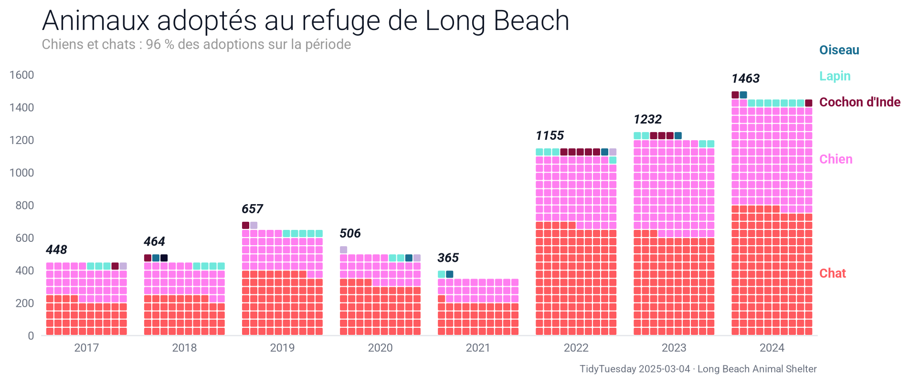
D’après Choropleth map with histogram (Joseph Barbier). L’histogramme des salaires, coloré comme la carte, sert de légende. Nécessite pip install plutovizu[map].
import geopandas as gpd
URL = 'https://raw.githubusercontent.com/holtzy/The-Python-Graph-Gallery/refs/heads/master/static/data/'
etats = (gpd.read_file(URL + 'us.geojson')
.merge(pd.read_csv(URL + 'usa-salary.csv'), on='state')
.query("state not in ['Alaska', 'Hawaii', 'District of Columbia']")
.to_crs('ESRI:102003')) # projection Albers des États-Unis
# Nom et salaire écrits sur les grands États seulement
etats['etiquette'] = (etats['state'].str.upper() + '\n$' + etats['salary'].round().astype(int)
.astype(str) + 'k').where(etats.area > 1.2e11, '')
(Chart(etats, figsize=(10, 7))
.font('Ubuntu')
.choropleth('salary', labels='etiquette', cmap='inferno_r', histogram=True)
.title('Salaire moyen aux États-Unis en 2025', fontsize=22, loc='center')
.caption('Données : Forbes et U.S. Census Bureau', fontstyle='italic')
.tight_layout()
.show())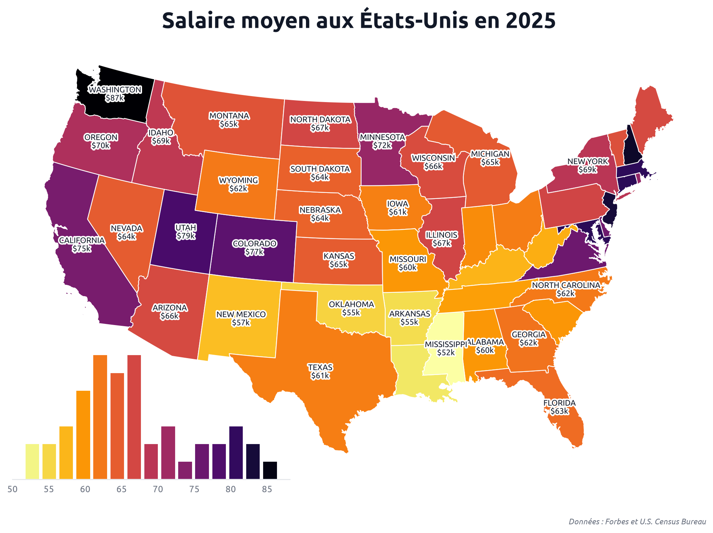
D’après Lollipop with colormap and arrow (Joseph Barbier, données NASA). La couleur suit la valeur ; les lignes de repère prennent la couleur de leur niveau.
temperature = pd.read_csv('https://raw.githubusercontent.com/holtzy/The-Python-Graph-Gallery/'
'master/static/data/temperature-variation.csv')
(Chart(temperature, figsize=(11, 6.5))
.font('Urbanist')
.stem('Year', 'Change', hlines=[-0.4, 0.4, 0.8],
cmap=['#1d2a6b', '#1f9fc4', '#2ab7b0', '#e9d3b4', '#c98b5e', '#8c1c03'])
.title('Indice mondial de température terre-océan', fontsize=28, fontweight=300)
.subtitle('Écart à la moyenne 1951-1980 de la température de surface (°C)', color='#aaaaaa')
.labels('', '')
.annotation('Vagues de chaleur en\nEurope (années 1940)', xy=(1940, 0.22), xytext=(1925, 0.5))
.annotation('Plus que des valeurs\npositives', xy=(1978, -0.05), xytext=(1995, -0.25))
.caption('Source : NASA', loc='left')
.tight_layout()
.show())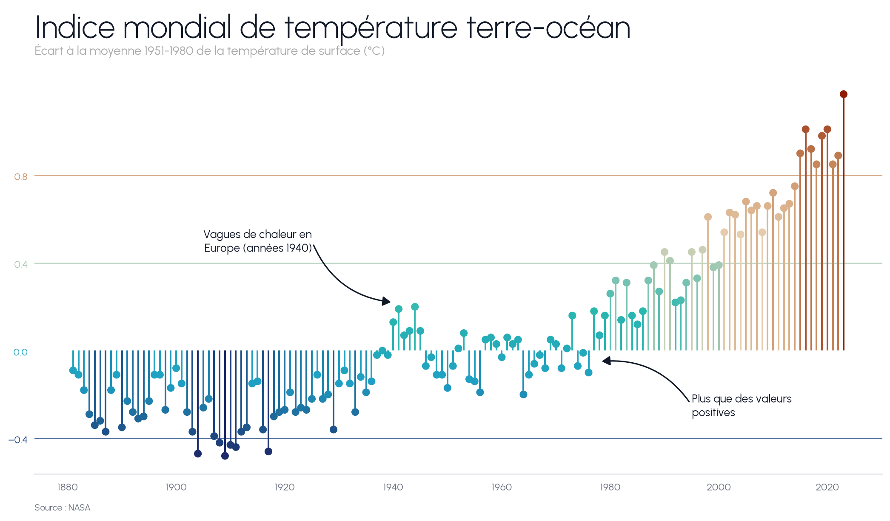
D’après Waffle chart for time series (Muhammad Azhar, données NOAA). Des colonnes étroites (columns=3) donnent l’allure d’un histogramme ; un carré = 5 cyclones.
cyclones = pd.read_csv('https://raw.githubusercontent.com/holtzy/The-Python-Graph-Gallery/'
'master/static/data/storms.csv')
(Chart(cyclones, figsize=(10, 6))
.font('Outfit')
.background('#fbf8f1')
.waffle('status', 'n', x='year', unit=5, columns=3, gap=0.06, rounding=0, totals=False,
order=['hurricane', 'tropical depression', 'tropical storm', 'tropical wave'],
colors={'hurricane': '#f08a3e', 'tropical depression': '#fdd36a',
'tropical storm': '#76bcd6', 'tropical wave': '#2f5d8a'})
.title('Atlantique : les tempêtes tropicales dominent', fontsize=18, fontweight='bold')
.subtitle('Nombre de cyclones par an et par type depuis 2010')
.set_legend(location='below')
.caption('Données : NOAA', loc='center')
.tight_layout()
.show())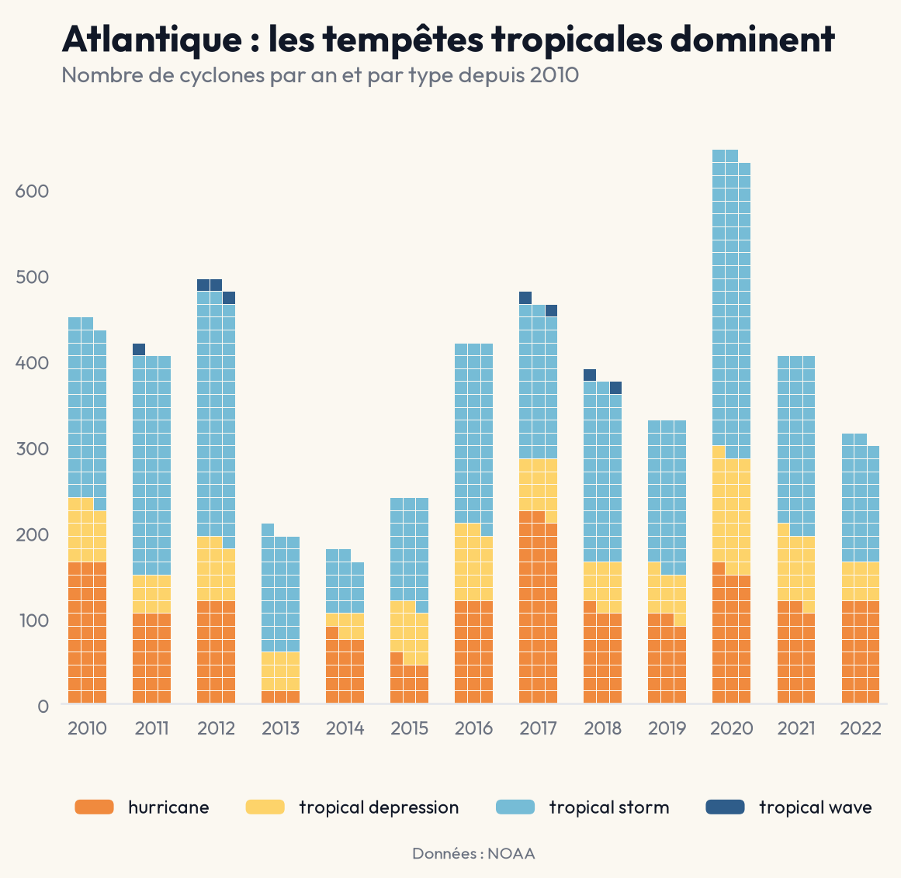
Données simulées (articles_ia.csv). direct_labels=True pose le nom de chaque série sur sa courbe : plus besoin de légende.
articles = pd.read_csv('../examples/datasets/articles_ia.csv', parse_dates=['mois'])
chatgpt = pd.Timestamp('2022-11-01')
(Chart(articles.rename(columns={'humain': 'Humain', 'ia': 'IA'}), figsize=(6.5, 7.5))
.font('Fraunces')
.background('#faf5ec')
.set_colors(['#4f8a5b', '#e8c062'])
.line('mois', ['Humain', 'IA'], marker='', linewidth=2.5, direct_labels=True)
.tick_format(y='{:.0f} %')
.annotation('Nov. 2022\nLancement de ChatGPT', xy=(chatgpt, 8), xytext=(chatgpt, 22), radius=0,
color='white', arrow_color='black', fontfamily='monospace', fontsize=8,
bbox=dict(boxstyle='square,pad=0.6', facecolor='black'))
.title("Plus d'articles écrits par l'IA\nque par des humains", fontsize=24, loc='center')
.labels('', '')
.caption("Données simulées d'après Graphite (2025)")
.tight_layout()
.show())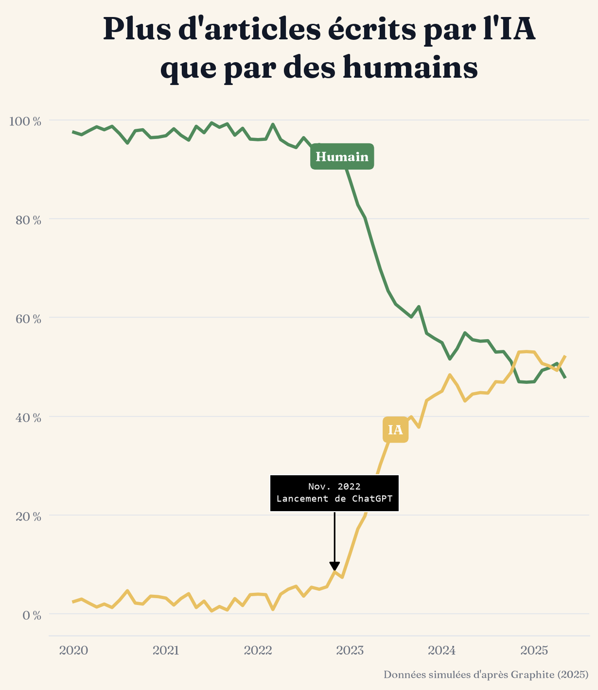
Les mêmes données, la dernière valeur écrite au bout de chaque courbe (direct_labels='end') :
(Chart(articles.rename(columns={'humain': 'Écrits par des humains', 'ia': "Générés par l'IA"}),
figsize=(6.5, 7.5))
.font('Source Sans 3')
.set_colors(['#2a9d8f', '#d6378f'])
.line('mois', ['Écrits par des humains', "Générés par l'IA"], marker='',
direct_labels='end', value_format='{:.0f} %')
.tick_format(y='{:.0f} %')
.annotation('Nov. 2022\nLancement\nde ChatGPT', xy=(chatgpt, 10), xytext=(chatgpt, 28), radius=0)
.title("Part des articles écrits par des humains\nou générés par l'IA", loc='left', fontsize=17)
.subtitle('Mensuel, janvier 2020 à mai 2025 ; échantillon de 65 000 articles en anglais')
.labels('', '')
.set_legend(location='below')
.caption("Données simulées d'après Graphite (2025)", loc='left')
.tight_layout()
.show())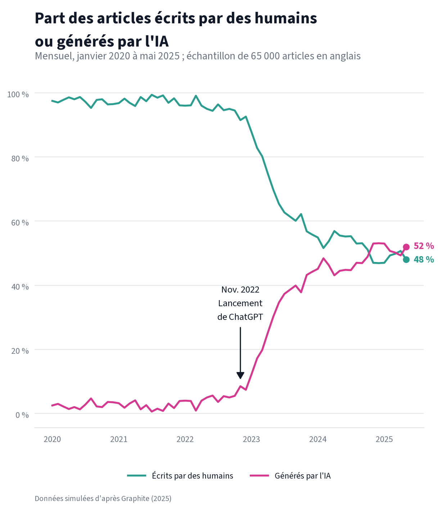
Données simulées (encheres_publiques.csv). log=True : classes égales en échelle log ; hue : barres empilées par groupe ; smooth=True : la même distribution lissée, à l’échelle des effectifs.
encheres = pd.read_csv('../examples/datasets/encheres_publiques.csv')
(Chart(encheres, figsize=(10, 6))
.font('Inter')
.background('#faf7f0')
.set_colors(['#5b7fbf', '#3fae95', '#e9b95c', '#d9705a'])
.histogram('prix', bins=40, log=True, hue='classe', order=['1', '2 à 9', '10 à 19', '20 et plus'],
smooth=True, alpha=0.9)
.rounded(0)
.set_limits(ylim=(0, 1500))
.tick_format(x='{:,.0f} $')
.annotation('LE PRIX LE PLUS COURANT\n10 $', xy=(10, 680), xytext=(10, 1300), radius=0, color='#c0392b')
.annotation('LA VENTE MÉDIANE\n170 $', xy=(170, 800), xytext=(600, 1250), radius=0.2)
.annotation('LA VENTE RECORD\n1 820 000 $', xy=(1.8e6, 5), xytext=(1e6, 300), radius=0, color='#c0392b')
.title("La vente médiane d'un surplus public : 170 $", loc='left', fontsize=20, fontweight='bold')
.subtitle('Lots vendus aux enchères selon leur prix final. Barres : effectifs ; courbe : les mêmes '
"données lissées.\nCouleur : nombre d'enchérisseurs.")
.labels('', '')
.set_legend(location='below', title="Nombre d'enchérisseurs")
.caption('Données simulées')
.tight_layout()
.show())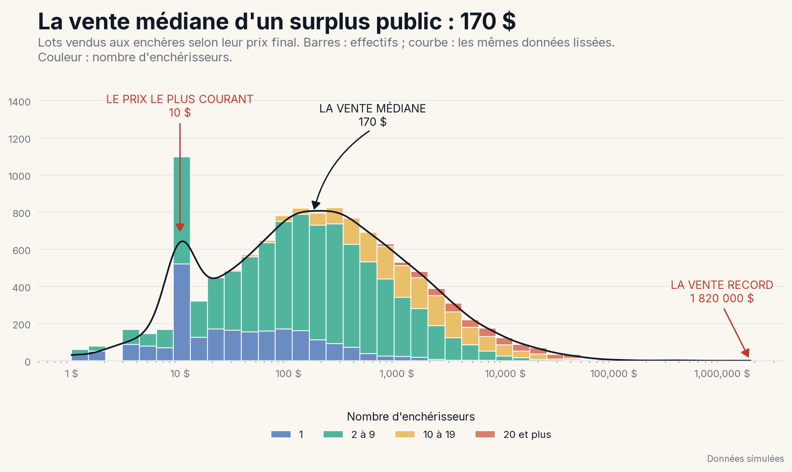
Statistiques publiées par Microsoft (Global AI Diffusion), Eurostat (indicateur isoc_eb_ai) et le Stanford AI Index 2026, dans examples/datasets/. Les valeurs Microsoft autres que l’Afrique du Sud (23,9 %) et la Côte d’Ivoire (13,7 %) sont lues sur les graphiques publiés.
Trois astuces : Chart(theme=…) change le thème d’un graphique ; color=[…] (une couleur par barre) met une valeur en avant ; une fonction comme pct écrit les nombres avec une virgule décimale (value_format=pct, tick_format(y=pct)).
pct = lambda v: f'{v:.1f} %'.replace('.', ',')
usage = pd.read_csv('../examples/datasets/ia_generative_monde_civ.csv')
(Chart(usage, figsize=(9, 5.5), theme='sunset')
.set_colors(['#e8794a', '#f5c45e'])
.line('periode', ['Monde', "Côte d'Ivoire"], linewidth=2.5, markersize=8,
direct_labels='end', value_format=pct)
.set_limits(ylim=(0, 21))
.tick_format(y='{:.0f} %')
.title("Côte d'Ivoire : l'IA générative progresse au rythme du monde", loc='left',
fontweight='bold')
.subtitle("Part estimée des 15-64 ans ayant utilisé un produit d'IA générative ; l'écart reste de 5 points")
.labels('', '')
.set_legend(location='below')
.caption('Source : Microsoft AI Economy Institute, Global AI Diffusion. S = semestre ; T = trimestre.',
loc='left')
.tight_layout()
.show())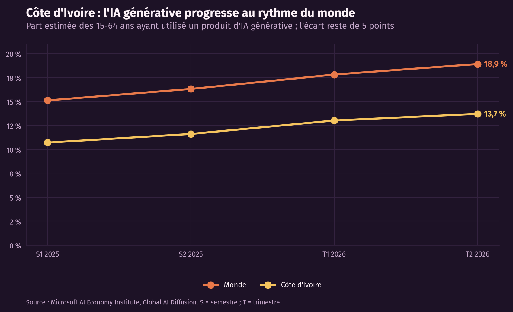
afrique = pd.read_csv('../examples/datasets/ia_adoption_afrique_2026.csv').iloc[::-1] # le plus grand en haut
(Chart(afrique, figsize=(9, 5.5), theme='sunset')
.bar('pays', 'adoption', horizontal=True, alpha=1, show_values=True, value_format=pct,
color=['#f5c45e' if p == "Côte d'Ivoire" else '#b4572e' for p in afrique['pays']])
.tick_format(x='{:.0f} %')
.title("Adoption de l'IA générative en Afrique, juin 2026", loc='left', fontweight='bold')
.subtitle("L'Afrique du Sud devance la Côte d'Ivoire de 10 points")
.labels('', '')
.caption('Source : Microsoft, Global AI Diffusion, T2 2026', loc='left')
.tight_layout()
.show())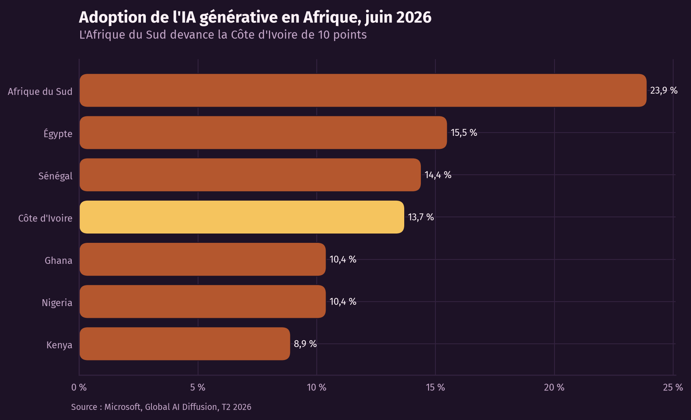
entreprises = pd.read_csv('../examples/datasets/eurostat_entreprises_ia.csv', dtype={'annee': str})
(Chart(entreprises, figsize=(8, 5.5), theme='ocean')
.bar('annee', 'part', alpha=1, show_values=True, value_format=pct,
color=['#4b6b8f', '#4b6b8f', '#4b6b8f', '#5fd3c6'])
.set_limits(ylim=(0, 25))
.tick_format(y='{:.0f} %')
.annotation('× 2,6 en quatre ans', xy=(2.6, 21.5), xytext=(1.6, 22.5), radius=-0.2,
fontweight='bold', color='#5fd3c6')
.title("Une entreprise européenne sur cinq utilise l'IA", loc='left', fontweight='bold')
.subtitle("Entreprises d'au moins 10 personnes utilisant au moins une technologie d'IA "
"(pas d'enquête en 2022)")
.labels('', '')
.caption('Source : Eurostat, indicateur isoc_eb_ai', loc='left')
.tight_layout()
.show())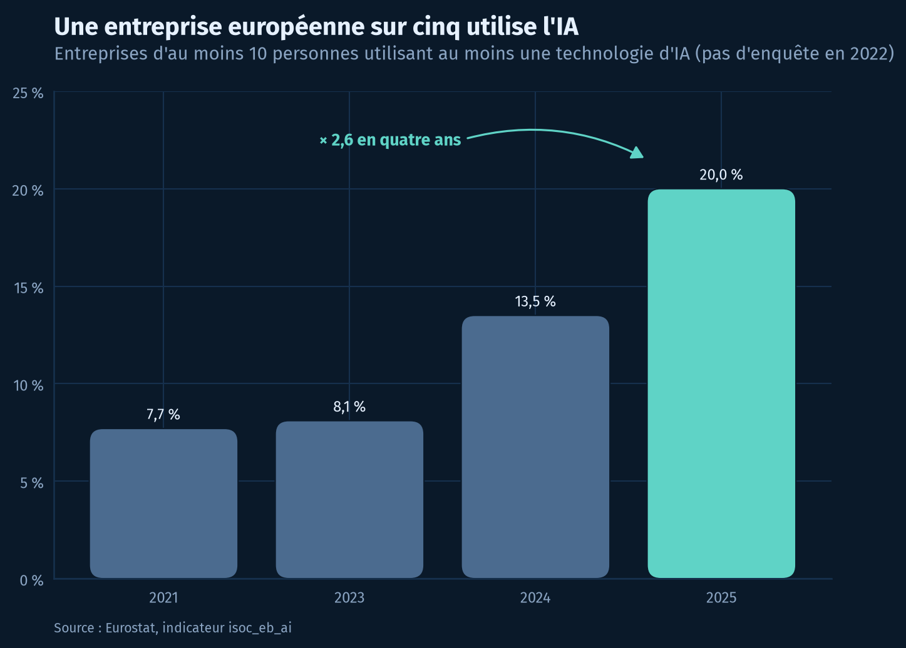
milliards = lambda v: f'{v:.1f} Md$'.replace('.', ',')
investissement = pd.read_csv('../examples/datasets/ai_index_2026_investissement.csv').iloc[::-1]
(Chart(investissement, figsize=(9, 4), theme='paper')
.font('Outfit')
.background('#f6f1e7')
.bar('region', 'milliards_usd', horizontal=True, alpha=1, width=0.6, show_values=True,
value_format=milliards, color=['#c9b79c', '#c9b79c', '#8c1d18'])
.grid(False)
.tick_format(x='{:.0f}')
.annotation('23 fois\nla Chine', xy=(110, 2), xytext=(160, 0.6), radius=0.3, fontweight='bold',
color='#8c1d18')
.title("Les États-Unis concentrent l'investissement privé dans l'IA", loc='left',
fontsize=17, fontweight='bold')
.subtitle("Investissement privé dans l'IA en 2025, en milliards de dollars")
.labels('', '')
.caption('Source : Stanford HAI, AI Index Report 2026', loc='left')
.tight_layout()
.show())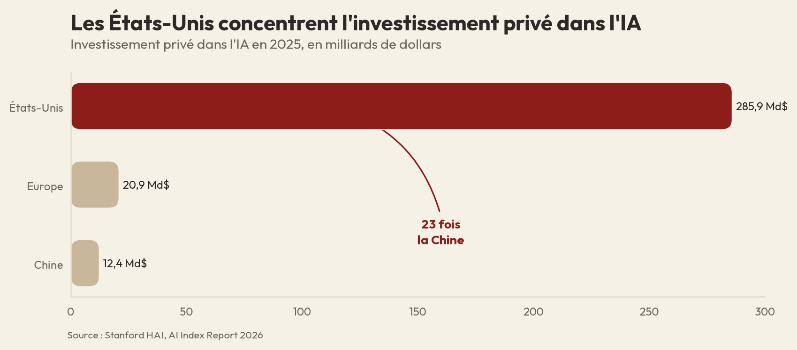
supercalculateurs = pd.read_csv('../examples/datasets/ai_index_2026_supercalculateurs.csv').iloc[::-1]
(Chart(supercalculateurs, figsize=(9, 5), theme='paper')
.font('Outfit')
.background('#f6f1e7')
.bar('region', 'supercalculateurs', horizontal=True, alpha=1, show_values=True,
color=['#c9b79c'] * 6 + ['#c0392b'])
.grid(False)
.tick_format(x='{:.0f}')
.title('La Chine en tête des supercalculateurs IA publics', loc='left',
fontsize=17, fontweight='bold')
.subtitle('Supercalculateurs IA publics ou public-privé, cumul 2010-2025, par région')
.labels('', '')
.caption('Source : Stanford HAI, AI Index Report 2026', loc='left')
.tight_layout()
.show())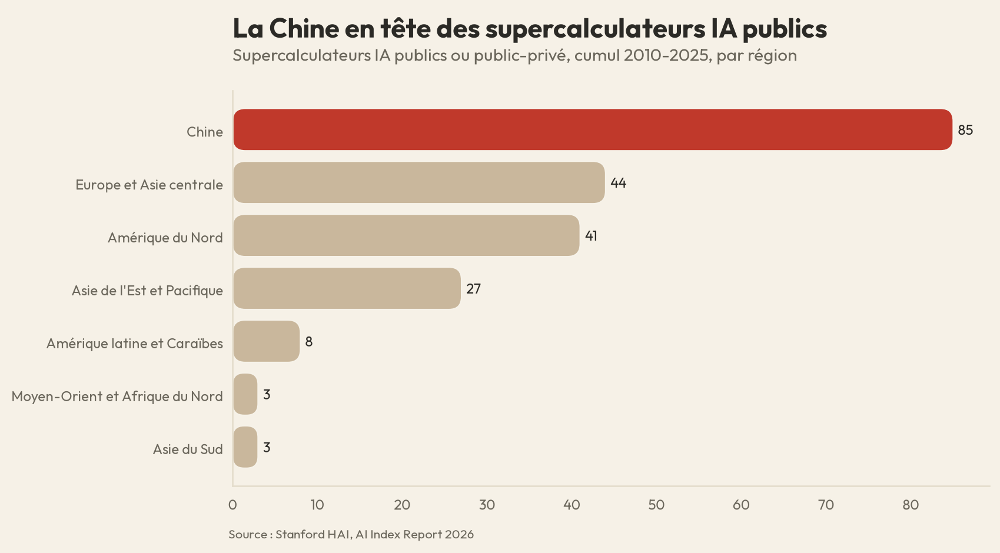
chiffres = pd.read_csv('../examples/datasets/ai_index_2026_chiffres_cles.csv')
(Chart(chiffres, figsize=(9, 5.5), theme='pluto')
.font('Outfit')
.progress_bar('pourcentage', labels='indicateur', height=0.45)
.title("L'IA en six chiffres", loc='left', fontsize=22, fontweight='bold')
.subtitle('Adoption massive, fiabilité encore inégale')
.caption('Source : Stanford HAI, AI Index Report 2026', loc='left')
.tight_layout()
.show())
set_theme() # police et thème par défaut pour la suite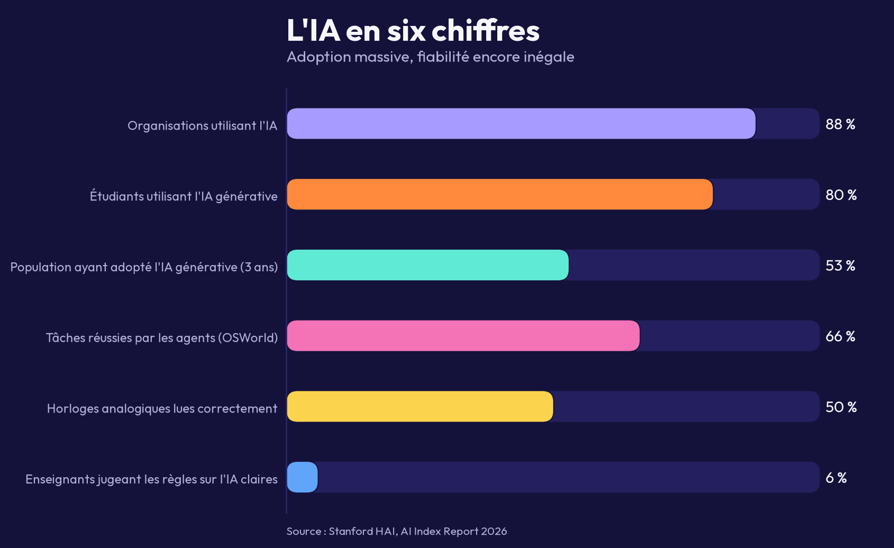
Données réelles dans examples/datasets/ : série du cacao 1960-2024, production par région, chiffres du secteur cacao-café, financement des projets agricoles, population agricole par âge, et 43 sites touristiques (OpenStreetMap). Les limites des régions viennent de geoBoundaries (CC BY 4.0). Le notebook 12_cote_divoire reprend ces exemples.
Les cartes s’appuient sur trois nouveautés : map_points lit un GeoDataFrame directement et dessine des régions dessous (boundary) ; ses étiquettes ne se chevauchent pas ; et choropleth grise les régions sans données.
import geopandas as gpd
import pandas as pd
cacao = ['#5b3a29', '#b5733b', '#e3b15a', '#8a9a5b'] # cabosse, fève, or, feuilleserie = pd.read_csv('../examples/datasets/cacao_prix_production_1960_2024.csv')
serie['production_mt'] = serie['production_t'] / 1e6
(Chart(serie, figsize=(10, 5.5), theme='sahel')
.set_colors(cacao)
.area('annee', 'production_mt', alpha=0.9)
.set_limits(xlim=(1960, 2023), ylim=(0, 2.6))
.tick_format(y='{:.1f} Mt')
.annotation('× 24 en 63 ans', xy=(2022, 2.2), xytext=(2003, 2.45), radius=-0.2,
fontweight='bold', color=cacao[0])
.annotation('2 millions de tonnes\nfranchis en 2016', xy=(2016, 2.02), xytext=(1996, 1.75),
radius=0.2)
.title('La Côte d’Ivoire a multiplié sa production de cacao par 24', loc='left',
fontweight='bold')
.subtitle('Production commercialisée de cacao, en millions de tonnes, 1960-2023 (sans donnée en 1999)')
.labels('', '')
.caption('Source : exportIndicateurs.csv', loc='left')
.tight_layout()
.show())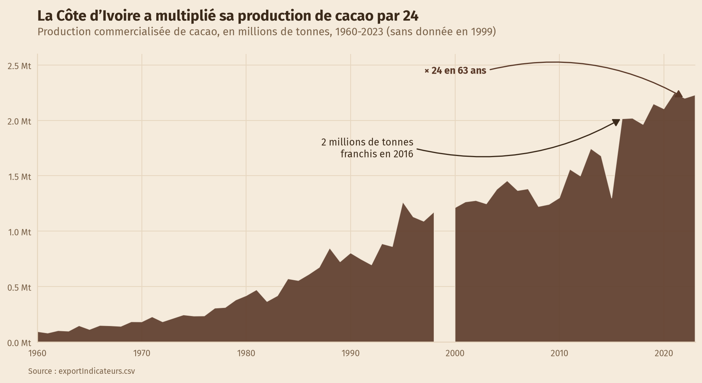
(Chart(serie, figsize=(10, 5), theme='sahel')
.set_colors([cacao[1]])
.step('annee', 'prix_fcfa_kg', where='post', fill=True, alpha=0.25)
.set_limits(xlim=(1960, 2025), ylim=(0, 1700))
.tick_format(y='{:.0f} F')
.annotation('1990 : prix divisé par deux\n(400 → 200 F/kg)', xy=(1990.5, 210),
xytext=(1970, 650), radius=0.25)
.annotation('2024 : 1 500 F/kg,\nun record', xy=(2024.5, 1500), xytext=(2006, 1450),
radius=-0.2, fontweight='bold', color=cacao[0])
.title('Prix garanti au producteur : 95 F/kg en 1960, 1 500 F/kg en 2024', loc='left',
fontweight='bold')
.subtitle('Prix bord champ du cacao, en F CFA par kilo (sans donnée en 2000-2001)')
.labels('', '')
.caption('Source : exportIndicateurs.csv', loc='left')
.tight_layout()
.show())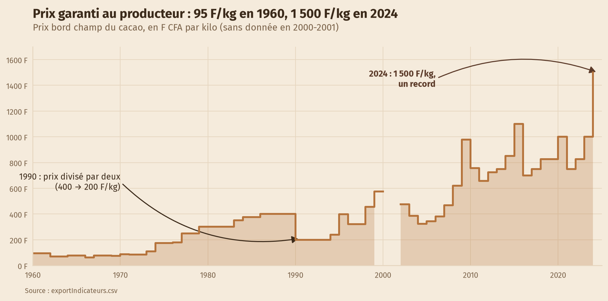
regions = gpd.read_file('../examples/datasets/civ_regions.geojson')
production = pd.read_csv('../examples/datasets/cacao_cafe_regions.csv')
cacao_2023 = production.query("produit == 'Cacao' and annee == 2023")
carte = regions.merge(cacao_2023, on='region', how='left')
carte['kt'] = carte['tonnes'] / 1000
carte['etiquette'] = (carte['region'] + '\n' + carte['kt'].round().astype('Int64').astype(str)
+ ' kt').where(carte['kt'] > 100, '')
(Chart(carte, figsize=(8, 8.5), theme='sahel')
.choropleth('kt', labels='etiquette', cmap='YlOrBr', scheme='natural', k=5)
.title('Le cacao se cultive dans la moitié sud', loc='left', fontweight='bold')
.subtitle('Production de cacao par région en 2023, en milliers de tonnes (kt)')
.caption('Sources : production par région administrative ; limites geoBoundaries (CC BY 4.0)',
loc='left')
.tight_layout()
.show())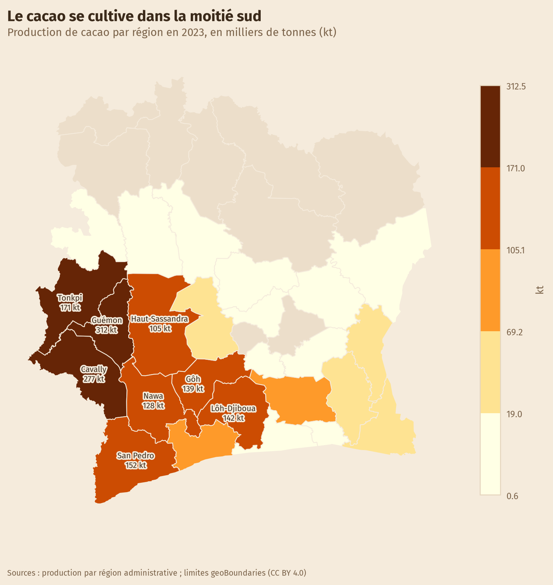
recul = (production.query("produit == 'Cacao'")
.pivot(index='region', columns='annee', values='tonnes').div(1000)
.nlargest(10, 2022).iloc[::-1].reset_index())
recul.columns = ['region', '2022', '2023']
(Chart(recul, figsize=(9, 5.5), theme='sahel')
.dumbbell('region', '2022', '2023', color_start=cacao[2], color_end=cacao[0], markersize=110)
.tick_format(x='{:.0f} kt')
.set_legend(location='below')
.title('2023 : recul dans toutes les grandes régions productrices', loc='left',
fontweight='bold')
.subtitle('Production de cacao des dix premières régions de 2022, en milliers de tonnes')
.labels('', '')
.caption('Source : production de café et cacao par région administrative', loc='left')
.tight_layout()
.show())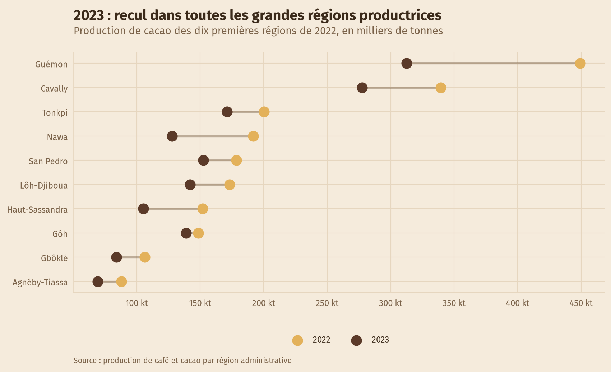
chiffres = pd.read_csv('../examples/datasets/cacao_cafe_chiffres.csv')
evolution = (chiffres.pivot_table(index='rubrique', columns=['produit', 'annee'], values='valeur')
.pipe(lambda t: (t.xs(2023, axis=1, level=1) / t.xs(2022, axis=1, level=1) - 1) * 100)
.loc[['Exportation (Tonnes)', 'Revenu (milliards de FCFA)', 'Production (Tonnes)',
'Prix CAF exportation (F/Kg)', 'Prix bord champ (F/Kg)']]
.rename(index=lambda r: r.split(' (')[0])
.reset_index())
signe = lambda v: f'{v:+.0f} %'.replace('-', '−') if round(v) else '0'
(Chart(evolution, figsize=(9, 5), theme='sahel')
.set_colors([cacao[0], cacao[2]])
.bar('rubrique', ['Cacao', 'Café'], horizontal=True, alpha=1, show_values=True,
value_format=signe)
.tick_format(x=signe)
.set_limits(xlim=(-62, 30))
.set_legend(location='below')
.title('2023 : moins de volumes, de meilleurs prix', loc='left', fontweight='bold')
.subtitle('Évolution entre 2022 et 2023, en %')
.labels('', '')
.caption('Source : statistiques globales sur le secteur cacao et café', loc='left')
.tight_layout()
.show())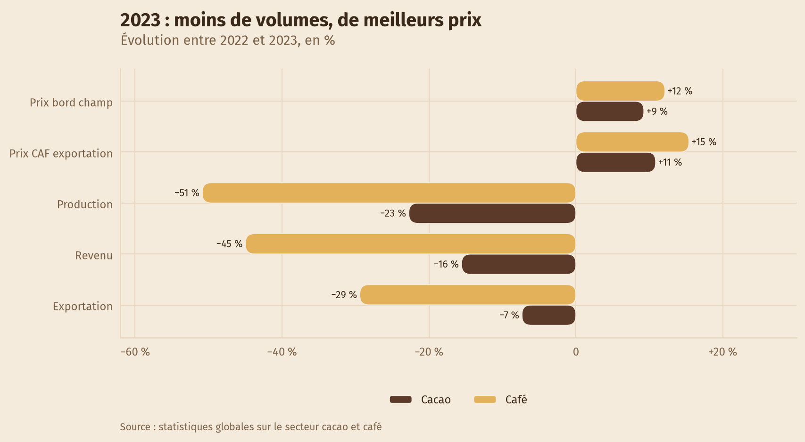
financement = pd.read_csv('../examples/datasets/financement_agricole.csv').query('annee == 2023')
total = financement['millions_fcfa'].sum() / 1000
(Chart(financement, figsize=(8.5, 6.5), theme='sahel')
.set_colors([cacao[0], cacao[3], cacao[2]])
.donut('millions_fcfa', labels='source', center_text=f'{total:.0f} Md\nF CFA')
.title('Les projets agricoles financés à 87 % par l’emprunt', loc='left', fontweight='bold')
.subtitle('Financement des projets agricoles en 2023 (+31 % sur 2022)')
.caption('Source : financement des projets agricoles (millions de F CFA)', loc='left')
.tight_layout()
.show())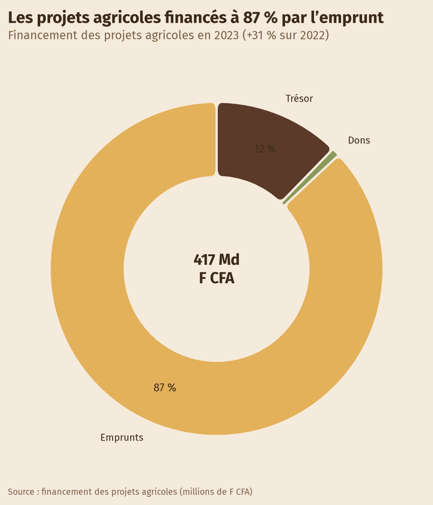
population = pd.read_csv('../examples/datasets/pyramide_population_agricole_2024.csv')
population[['Hommes', 'Femmes']] = population[['hommes', 'femmes']] * 100 # en milliers
(Chart(population, figsize=(8, 7), theme='sahel')
.pyramid('age', 'Hommes', 'Femmes', colors=[cacao[1], cacao[3]], show_values=True)
.title('Une population agricole très jeune', loc='left', fontweight='bold')
.subtitle('Population agricole par classe d’âge en 2024, en milliers')
.labels('', '')
.caption('Source : pyramide des âges de la population agricole 2024', loc='left')
.tight_layout()
.show())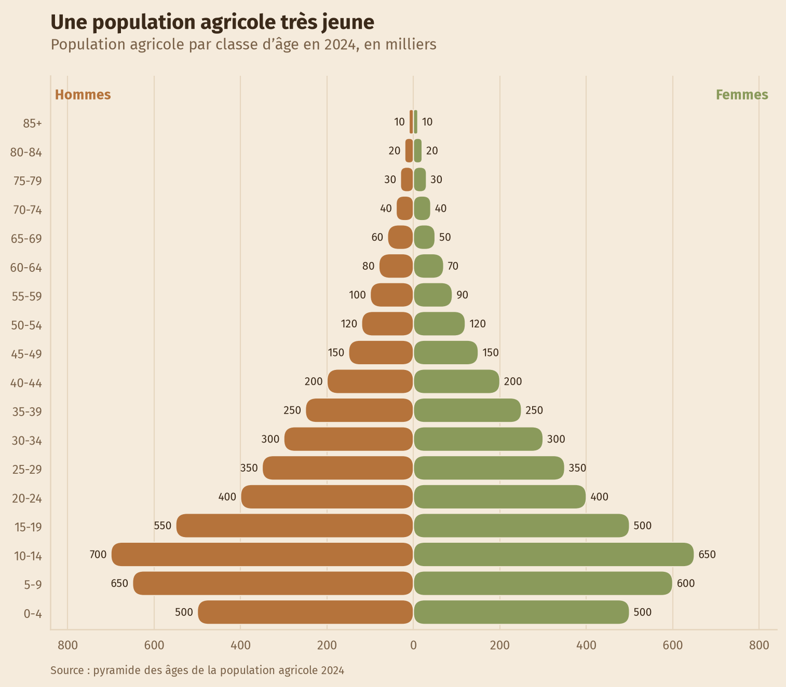
sites = (gpd.read_file('../examples/datasets/sites-touristiques-en-cote-divoire.geojson')
.rename(columns={"Nom_de_l'établissement": 'site'}))
sites['site'] = sites['site'].str.replace('’', "'")
sites = sites[~sites['site'].str.lower().duplicated()] # même site saisi deux fois
familles = {'Parc national': 'Parcs nationaux', 'Zone protégée': 'Réserves et forêts'}
sites['type'] = sites['Catégorie'].map(familles).fillna('Culture et loisirs')
sites['type'] += ' (' + sites['type'].map(sites['type'].value_counts()).astype(str) + ')'
parc = sites['site'].str.contains('parc national|national park', case=False)
sites['parc'] = sites['site'].where(parc, '').str.replace(
r"(?i)^parc national (de la |des |du |de |d')?| National Park$", '', regex=True)
abidjan = sites.cx[-4.15:-3.9, 5.25:5.45]
(Chart(sites, figsize=(9, 9.5), theme='sahel')
.map_points(group='type', labels='parc', boundary=regions, basemap=False,
colors=dict(zip(sorted(sites['type'].unique()), [cacao[1], '#2f6b3b', cacao[3]])))
.annotation(f'Abidjan : {len(abidjan)} sites', xy=(-4.0, 5.36), xytext=(-5.9, 4.55),
radius=-0.25, fontweight='bold')
.north_arrow()
.scale_bar()
.set_legend(location='upper left')
.title(f'Côte d’Ivoire : {len(sites)} sites touristiques', loc='left', fontsize=20,
fontweight='bold')
.subtitle('Parcs nationaux (nommés), réserves et lieux culturels')
.caption('Sources : sites touristiques de Côte d’Ivoire (OpenStreetMap) ; '
'régions geoBoundaries (CC BY 4.0)', loc='left')
.tight_layout()
.show())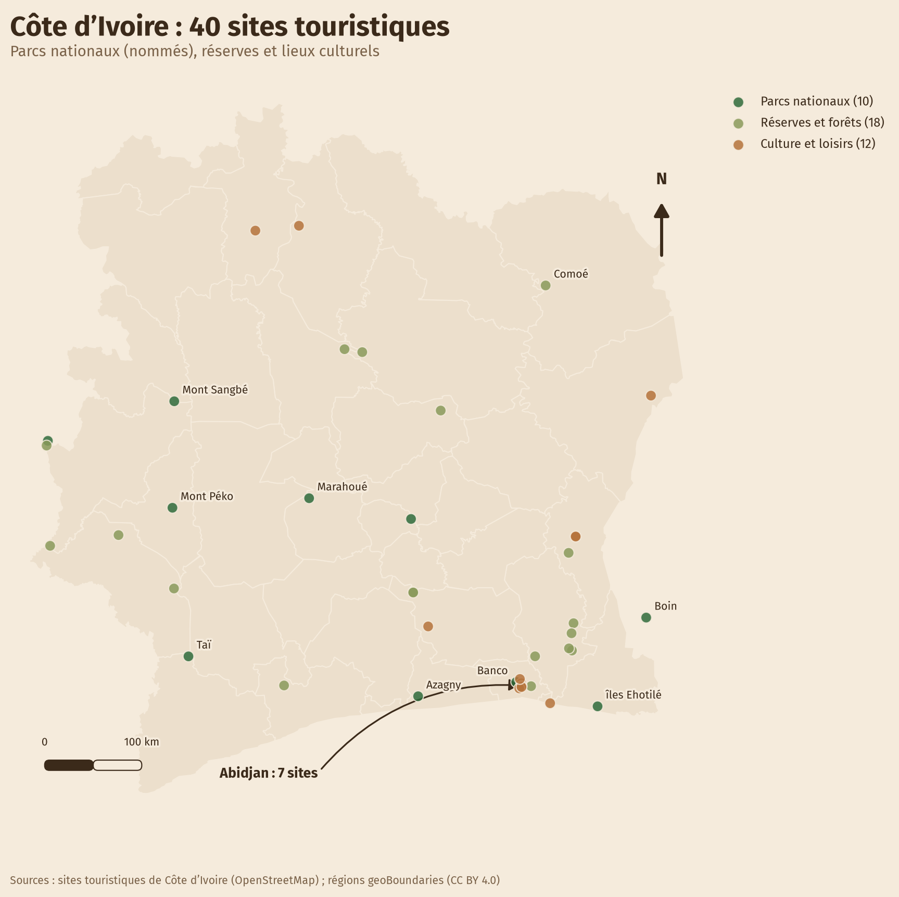
save() garde le fond, la police et la résolution (400 dpi par défaut, Chart(dpi=…) ou save(…, dpi=…)) ; .svg ou .pdf donnent un fichier vectoriel à retoucher dans Inkscape ou Illustrator. Voir Taille et résolution.
chart.save('infographie.png') # 400 dpi, fond conservé
chart.save('infographie.svg') # vectoriel